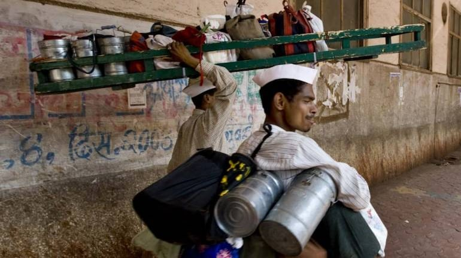

<hmtl>
<head>
  <link href="https://fonts.googleapis.com/css2?family=Oswald&display=swap" rel="Main_page.css">
 <link href="https://fonts.googleapis.com/css2?family=Lato&display=swap" rel="Main_page.css">
    <link rel="stylesheet" type="text/css" href="Main_page.css" />
    <script src="https://kit.fontawesome.com/a076d05399.js"></script>
  </head>
<body><center>
    <input type="checkbox" id="active">
    <label for="active" class="menu-btn"><span></span></label>
    <label for="active" class="close"></label>
    <div class="wrapper">
      <ul>
<li><a href="MYLUNCH.HTML">Home</a></li>
<li><a href="Service.html">Services</a></li>
<li><a href="media.html">Gallery</a></li>
<li><a href="form.php">Order_Now</a></li>
<li><a href="https://punitmistr.getform.com/erjl8">Feedback</a></li>
</ul>
</div>
<div class="content">
      <div class="title">
Fullscreen Overlay Navigation Bar</div>
<p>
(Hamburger Menu-2)</p>
</div>
    
    
<div class="w3-content w3-section" style="max-width:2000px;min-width:500px" id="home">
  
    
  
  
</div>
</center>
<script>
var myIndex = 0;
carousel();

function carousel() {
    var i;
    var x = document.getElementsByClassName("mySlides");
    for (i = 0; i < x.length; i++) {
       x[i].style.display = "none";  
    }
    myIndex++;
    if (myIndex > x.length) {myIndex = 1}    
    x[myIndex-1].style.display = "block";  
    setTimeout(carousel, 2000); // Change image every 2 seconds
}
</script>
    </body>
</hmtl>
    